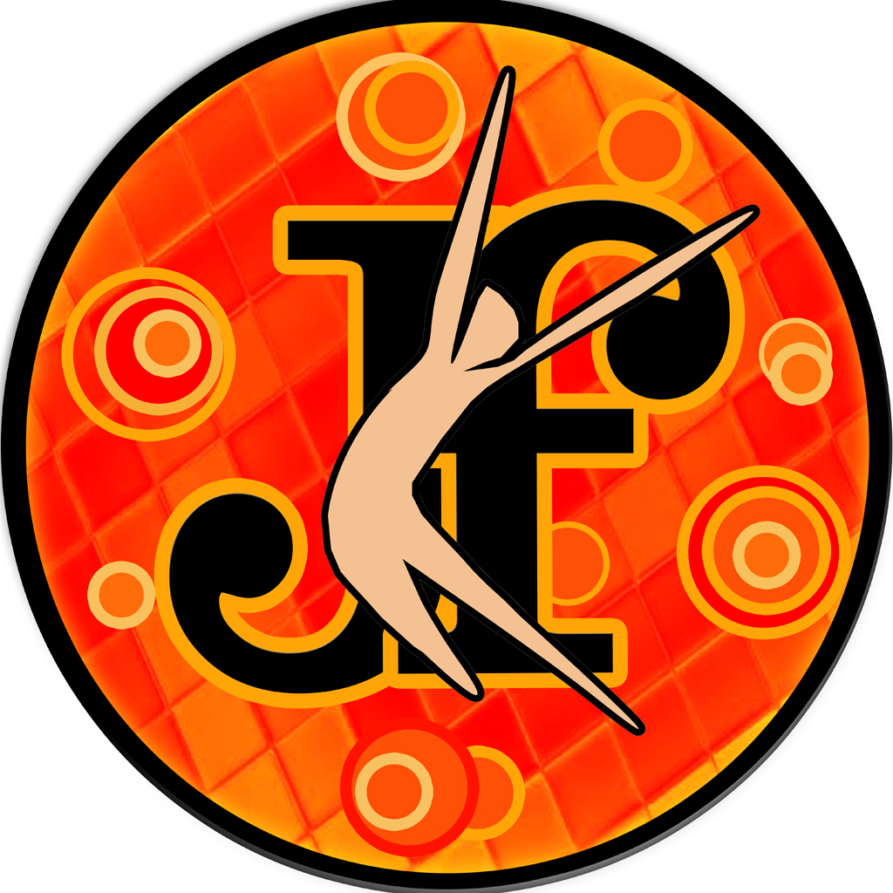

|
La' Orientation Professionnelle
Helping our juniors to perfectly choose a career of their interest and passion is exactly what we do here. The students will be given guidance on their immediate next and long term career choices and opportunity by the Joshians who are proficient in their respective fields. La' Orientation Professionnelle happens twice a year, one for the 10th standard students and another for the 12th standard students. We encourage questions from the students after each session so that we get to know what they actually want to know. Information regarding competitive exams, course details, college details, board exam tips, entrance exam details will be provided to the students on this day. So thus this event takes our student's perception of education to a completely different level. |
|  |
JAMFEST
JAMFEST has twenty five plus events under its banner, titled under different categories like arts, literary and cultural. Every event is designed for senior and junior categories separately. Participants from distinctive schools, around 400 students compete to win the overall trophy. The First edition of JAMFEST was organised in the year 2011 and have successfully completed 4 editions so far. Each edition was bigger, better and successful than the previous editions. The team has consistently raised the bar of good standards. Food stalls, fun games compliment and liven the main events. We shaped JAMFEST to create wings to young talents. |
JOSH Talent League
JOSH Talent League is a real treat for the students of St James. Students from kindergarten to higher secondary, participate in JTL. JTL has twenty plus events categorised as arts, literary and cultural. With the best set of contestants, audiences, judges and staffs we take this event forward to create opportunity and space to showcase the ability of Jamesians and to award them for what they are really enthusiastic about. |
|

|
Alumni Get-togethersJOSH-The Phoenix is an alumni crew with nearly 1300 members from various parts of the world. We take pleasure in organising events like Career Counselling, JTL and Jamfest. To carry out all these flawlessly, to strengthen communication among all Joshians, to enhance the bond between each of us, to give detailed description on what is being done, to each and every alumnus, we gather on a day to discuss steps and ideas to take JOSH to the next level of improvement. We validate feedbacks after each event and try to give them right shape. It gives us satisfaction that we give back something worthy to the place which has carved us so fine, to be in the position we are right now. Alumni get-togethers are planned once a year to strengthen JOSH. |